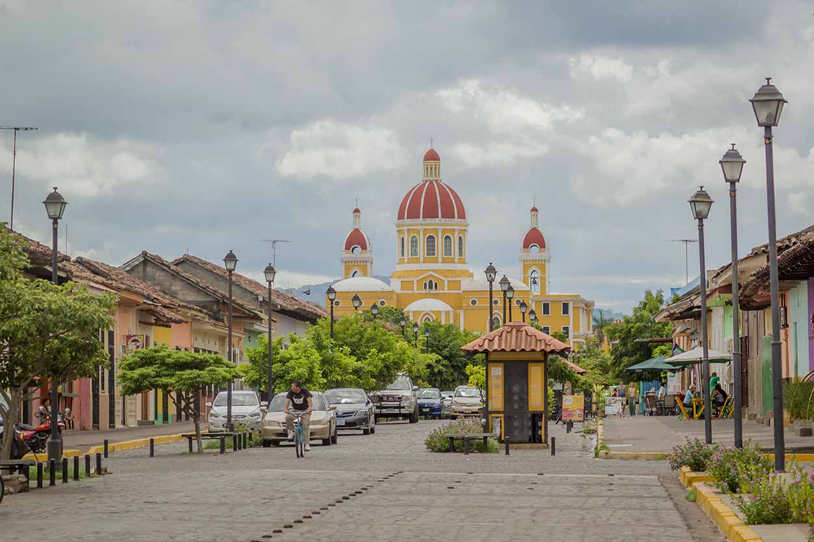
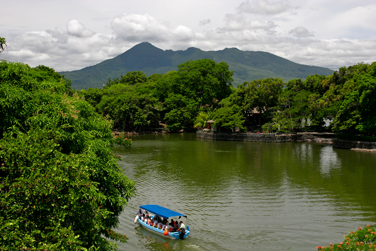

PARQUE CENTRAL GRANADA
La ciudad de Granada es una de las más visitadas del país por ser una ciudad colonial bien conservada con muchos monumentos bonitos pero también una naturaleza increíble. En el centro de la ciudad, al lado de la Catedral de Granada, se encuentra el parque central, un lugar fresco, perfecto para ir a descansar tomando un fresco natural o para comer un buen vigorón, el platillo típico de la ciudad.
Ver más
ISLETAS DE GRANADA
Cuando el volcán Mombacho hizo erupción hace muchos años, tiró enormes rocas al Lago de Nicaragua. Como resultado , se formaron 365 islas pequeñas enfrente de Granada. Las isletas varían en tamaño y forma desde cien metros cuadrados hasta más de cien hectáreas. La naturaleza, las aves locales y migratorias, y la cotidianeidad de las familias autóctonas lo hacen un paraje ideal para paseos en lanchas o kayak.
Ver másMERCADO MUNICIPAL DE GRANADA
Si vas a Granada por ley tienes que hacer una visita al mercado municipal de esta ciudad, ya que aquí encontraras uno de los mercados mas diversificados y pintorescos de nuestro país. Ya que podrás difrutar de los excelentes platillos típicos d eesta ciudad y además, podras hacerte de artefactos y artesanía que te serviran para poder adornar y arreglar tu casa y támbien encontraras los mejores precios en productos.
Ver másHistoria de Granada
Fundada en 1524 por Francisco Hernández de Córdobas en honor a su natal Granada de España, por su posición geográfica sufrió en el siglo XVII varias incursiones piratas que saqueaban la ciudad. Dichas incursiones se dieron en 1665,1670 y 1685. En 1856 fue incendiada y destruida casi totalmente por los huestes del Filibustero William Walker. Luego de la Guerra nacional se inicio su reconstrucción privando en ella una riquísima arquitectura colonial y neo clásica en sus Iglesias y demás Edificios y plazas.
Ubicado en el costado sur del Parque Colon o Parque Central, el espacio urbano del parque se amplia y prolonga con el porticado del Palacio Municipal que alberga oficinas donde funciona la Alcaldía y los inmuebles adyacentes, definiéndose como una unidad espacial en los costados sur y oeste del centro de la ciudad, dichos inmuebles de reminiscencia Colonial y ecléctica contrastan con la fachada de influencia andaluza que presenta la Alcaldía. Fue construido en 1751 y luego del incendio de la ciudad fue reconstruido en 1856 y se le hicieron reparaciones en 1873 y ya en 1938 se procedió a la reconstrucción total del edificio.